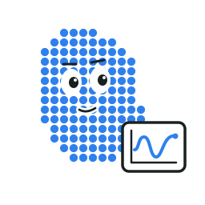
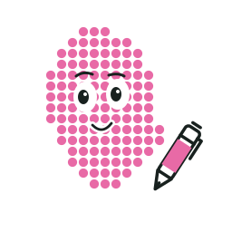
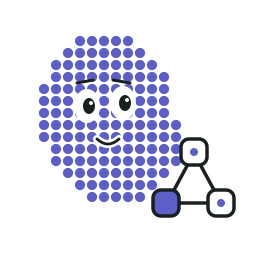
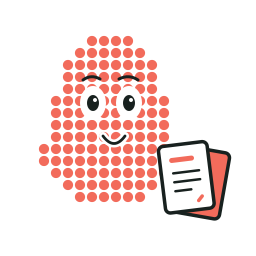
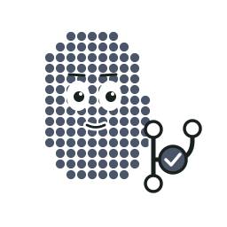

01
Coordinator
Calm conductor. Plans the work and keeps everyone on track.
Sixteen distinct minds. One curious research team.
Calm conductor. Plans the work and keeps everyone on track.
Curious and sceptical. Never trusts a single source.
Sees the big picture. Turns a pile of papers into a map.
Sharp thinker. Turns a gap into a testable question.
Hands-on tinkerer. Runs the test before believing it.

Pattern spotter. Watches how things change over time.
Tough but fair. Important work gets a second look.

The rewriter. Turns feedback into a better draft.
Keeps the records. Every finding filed with its evidence.
Brainstorm squad. Many ideas, scored blind.
Knows your library. Adds papers, never deletes yours.
Precise artist. Its charts are checked against the data.

Draws how everything connects.

Turns results into reports and slides.
Explorer. Finds new tools worth trying.

Tidy and careful. Commits only with your yes.